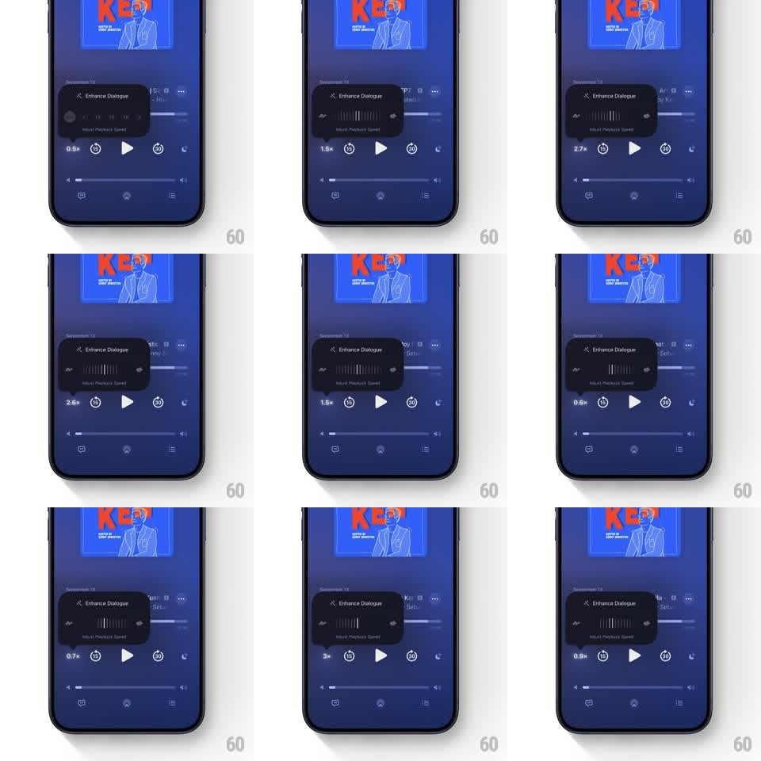

Media
Frame-by-frame

Rebuild this interaction 1:1: Apple Podcasts' playback speed control - the popover opens with discrete speed presets, and dragging across it morphs the buttons into a continuous dial slider that scrubs from 0.5x to 3x with live readout.

Rebuild this interaction 1:1: Apple Podcasts' playback speed control - the popover opens with discrete speed presets, and dragging across it morphs the buttons into a continuous dial slider that scrubs from 0.5x to 3x with live readout.
## Integration
Integration: stack-agnostic spec - springs given as stiffness/damping, timed motions as duration + curve; map every value to your framework and animation library of choice.
## Scene
Dark blue podcast player: episode art top, an "Enhance Dialogue" popover card with the playback speed row ("Adjust Playback Speed"), and transport controls below (speed button showing the current value, skip-15, play, skip-30, timer). The speed button label updates live (0.5x, 1.1x, 2.2x, 3x).
## Motion spec
Pattern: discrete-to-continuous control morph, gesture-driven.
- Open: the popover slides up over the dimmed player (300ms, ease-out), showing preset buttons (0.5, 1, 1.5, 2) with the current one highlighted.
- Morph: touching and dragging horizontally stretches the preset row into a continuous dial - the discrete labels spread apart and fade (200ms) as tick marks fade in between them, the row becoming a scrubbable track.
- Scrub: dragging moves a fill/indicator under the finger 1:1; the speed value updates live with one-decimal precision, easing between snap points (magnetism at 0.5x steps) with tick haptics.
- Commit: release settles the indicator on the nearest value (spring ~400/24), the dial morphs back to its compact state (200ms), and the player's speed button cross-fades to the new label (150ms).
## Calibration
- The morph is driven by the drag, not a mode switch - presets and dial are two states of one control.
- Value changes are continuous during scrub (1.1x, 2.2x), not limited to presets.
## Reduced motion
Presets swap to a static slider with 150ms fades; no morph.
## Don't miss
- The speed button in the transport bar always mirrors the committed value.
- The popover keeps its Enhance Dialogue row visible above the speed control.